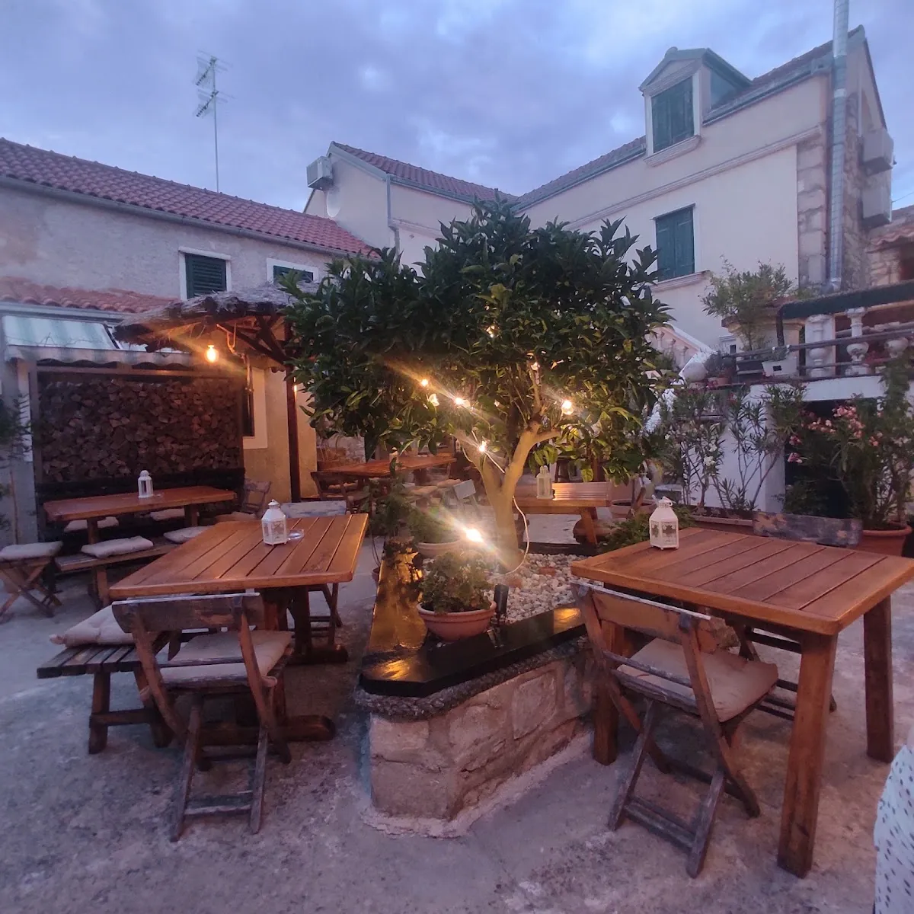
Biograd na Moru, Dalmacija
Riba iz mora. Konoba pod zvonikom. Biograd u srcu.
Dalmatinska riblja kuhinja u podnožju zvonika
"Kampanel" — kameni zvonik crkve sv. Stošije, koji se nad starim gradom Biograda uzdiže još od druge polovice 9. stoljeća. Mi smo konoba koja nosi to ime s poštovanjem. I s ponosom.
Ime koje nosi
povijest zvonika
Kampanel — na dalmatinskom kameni zvonik, campanile. Naš zvonik je onaj crkve sv. Stošije u starom gradu Biograda: po njemu je konoba i dobila ime.
Konoba Kampanel smjestila se u srcu starog grada, doslovno u podnožju tog zvonika, a kamena terasa gleda ravno u toranj. Prema povijesnim istraživanjima, zvonik i predvorje crkve sv. Stošije potječu iz druge polovice 9. stoljeća, iz istog doba kad je podignuta i trobrodna crkva.
Današnja župna crkva sv. Anastazije (sv. Stošije) izgrađena je 1761. godine, s pet baroknih oltara, a kameni zvonik i dalje se uzdiže na njezinoj sjevernoj strani. Pod njim, u kamenoj konobi, kuha se dalmatinska riblja kuhinja.
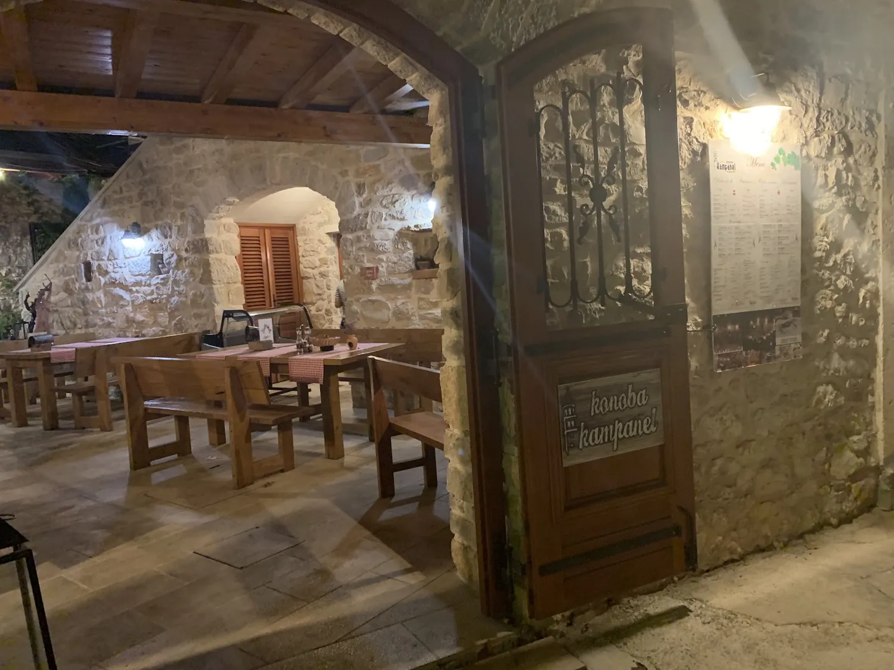
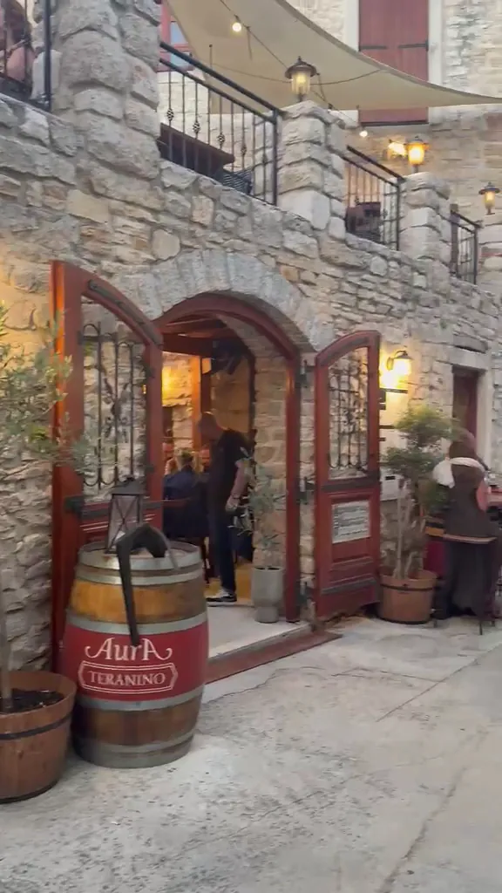
Recenzije
Što kažu
gosti na Googleu
"Hrana, usluga i atmosfera savršeni. Daleko najbolje gastronomsko iskustvo u Biogradu i šire." — Ivana Vučenović, Google
"Neopisiv doživljaj Dalmacije! Svježa riba i plodovi mora, crni rižoto, tartar od tune — prefino. Ekipa vesela, jeli smo i pili satima." — Vlatka Poropat, Google
"Svake godine otiđemo u Konobu Kampanel i uvijek je poseban doživljaj. Hrana izvrsna, vinska karta također — osjeća se obiteljska atmosfera." — Ana Božić, Google
Galerija
Konoba u slikama
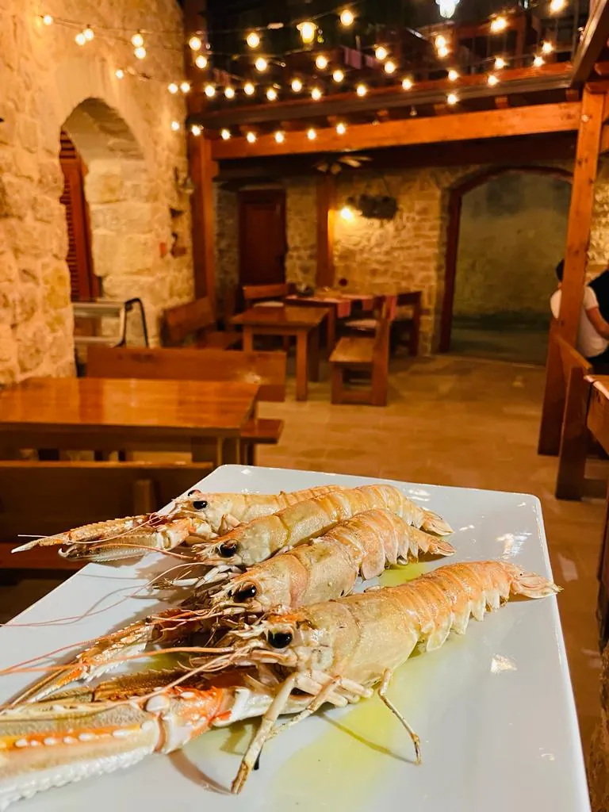
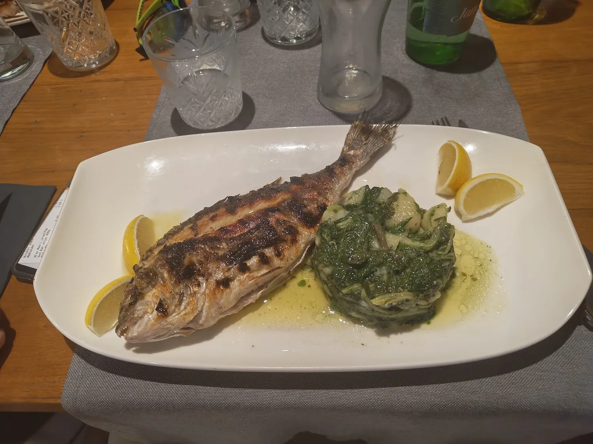
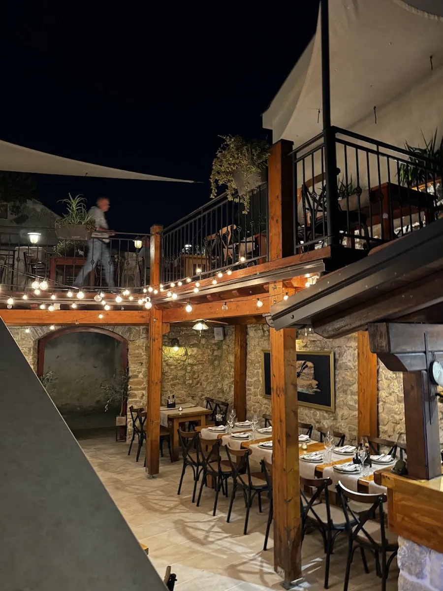
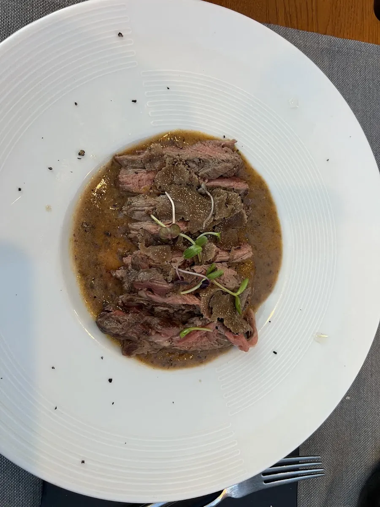
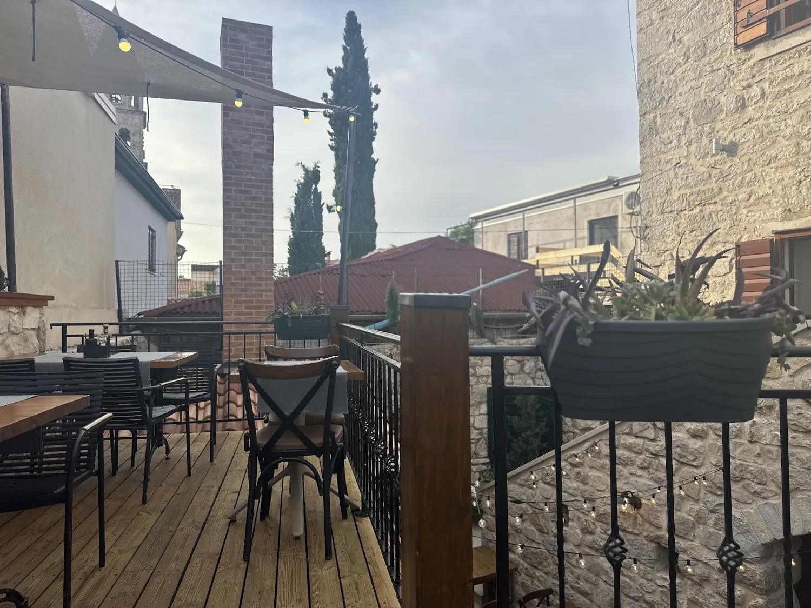
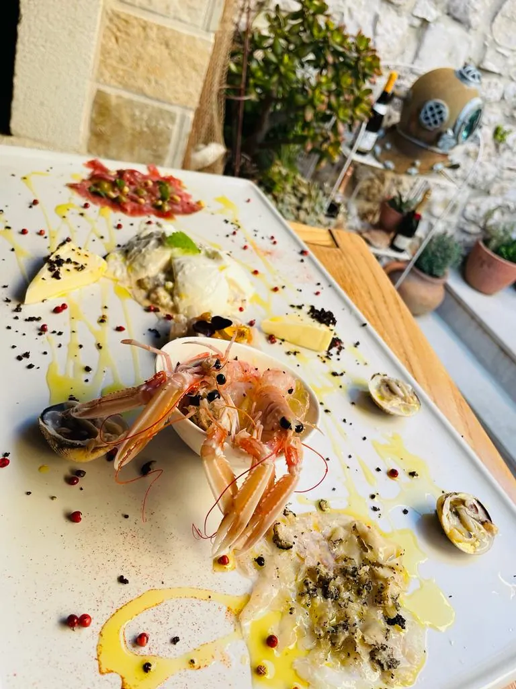
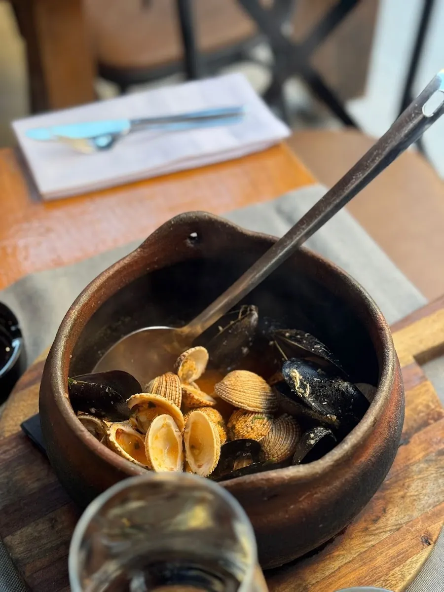
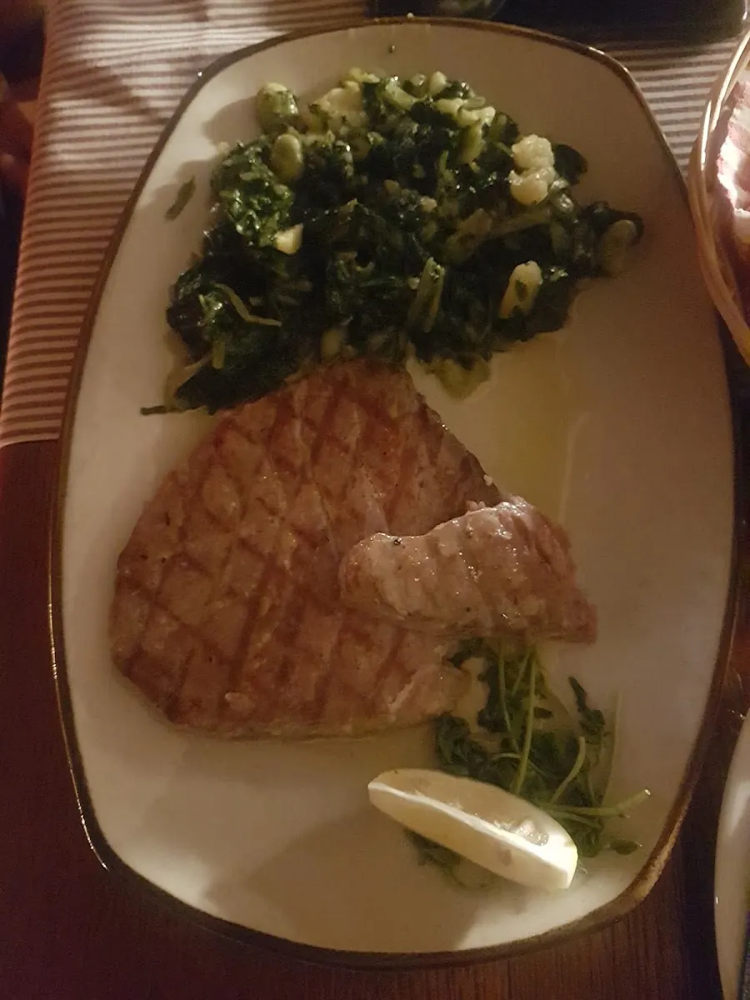
Rezervacije & Radno Vrijeme
Rezervirajte
Vaš stol
Konoba se otvara u 17:00, svaki dan. Za stol na kamenoj terasi najsigurnije je nazvati unaprijed.
Za rezervaciju nazovite ili nam pišite.
Kontakt
Pronađite
Kampanel
- Adresa Ul. kralja Kolomana 7, 23210 Biograd na Moru
- Telefon +385 95 312 3160
- E-mail konoba.kampanel@gmail.com
- Radno Vrijeme Svaki dan, otvoreno od 17:00